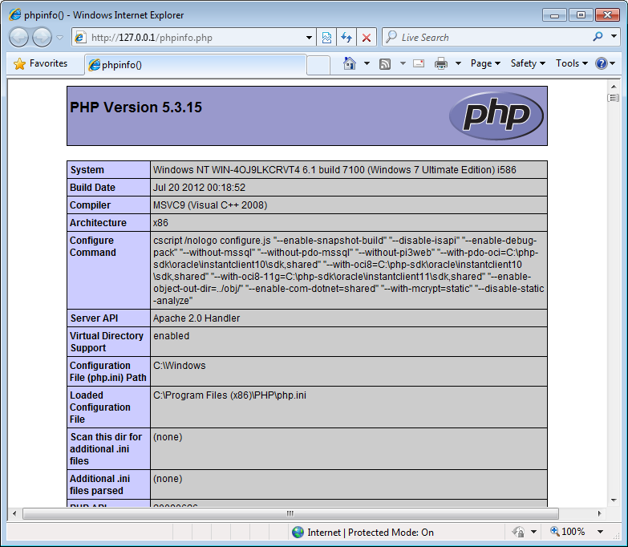
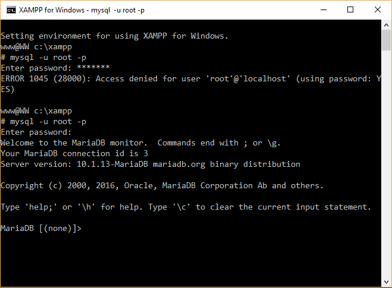

Установка Apache, PHP и MySQL в Windows
Мы настоятельно рекомендуем использовать Linux для разработки на PHP. Если для ежедневной работы вы используете Windows, вы можете поставить Linux на виртуальную машину (например, на VirtualBox) и запускать на ней Apache, PHP и MySQL. Если в то же время вы хотите использовать NetBeans на Windows, это не проблема - просто настройте общий каталог (например, настройте сервер Samba на вашей виртуальной машине).
Если же вы очень хотите установить Apache, PHP и MySQL на Windows (чего мы, опять-таки, не рекомендуем делать), вот некоторые инструкции (но обратите внимание, что установка на Windows может быть сложнее, чем на Linux).
Существует два самых популярных дистрибутива Apache + MySQL + PHP:
Выберите один из них и установите его на сервер.
Проверка установки веб-сервера
После установки веб-сервера необходимо проверить, корректно ли он установился, а также распознает ли сервер Apache PHP-движок.
Для проверки правильности установки PHP и Apache, создайте файл phpinfo.php в корневой директории документов Apache.
В файле phpinfo.php используйте метод phpinfo() следующим образом:
<?php
phpinfo();
?>
Откройте файл в вашем браузере. Должна отобразиться стандартная страница сведений (рисунок A.3).
 Figure A.3. Страница сведений PHP
Включение модуля mod_rewrite
Zend Framework 3 требует включенного модуля Apache mod_rewrite.
Чтобы его включить mod_rewrite, откройте файл конфига Apache (обычно это httpd.conf), затем найдите следующую строчку:
#LoadModule rewrite_module modules/mod_rewrite.so
и уберите решетку (#) вначале, чтобы раскомментировать строку. Она должна будет выглядеть так:
LoadModule rewrite_module modules/mod_rewrite.so
Затем перезапустите веб-сервер Apache для применения изменений.
Создание виртуального хоста Apache
Термин "виртуальный хост" означает, то вы можете держать несколько веб-сайтов на одной машине. Виртуальные сайты отличаются доменными именами (например, site.mydomain.com и site2.mydomain.com)
О том, как создавать виртуальные хосты, вы можете прочитать в документации WAMP или XAMPP.
На данный момент вам не нужно изменять файл виртуального хоста, мы сделаем это в главе Zend Skeleton Application при установке приложения Hello World. Пока что вам просто нужно понять, как создаются виртуальные хосты.
Установка PHP-расширения XDebug
Для возможности отладки ваших сайтов в среде разработки NetBeans, рекомендуем установить расширение XDebug для PHP. Скачайте соответствующую DLL с этого сайта.
Затем отредактируйте файл php.ini, добавив следующую строку:
zend_extension="C:/path/to/your/xdebug.dll"
Если вы планируете отлаживать ваш сайт с удаленного хоста, вам также необходимо добавить эти строчки:
xdebug.remote_enable=on
xdebug.remote_handler=dbgp
xdebug.remote_host=<remote_ip_address>
Перезапустите сервер Apache, чтобы применить изменения. Затем откройте phpinfo.php в браузере и найдите раздел XDebug (он должен выглядеть как на рисунке A.4):
 Figure A.4. Данные XDebug
Figure A.4. Данные XDebug
Настройка сервера БД MySQL
Теперь создадим схему БД и пользователя БД. Воспользуемся клиентом командной строки MySQL. Посмотрите в документации WAMP или XAMPP, как это сделать.
Клиент командной строки MySQL выглядит следующим образом (см. рсиунок A.5):
 Рисунок A.5. Клиент командной строки MySQL
Теперь нам нужно создать новую БД, которая будет хранить таблицы. Чтобы это сделать, наберите в клиенте MySQL следующее:
CREATE DATABASE test_db;
Эта команда создаст пустую БД, которую мы заполним позже. Если команда выполнилась успешно, вы увидите такое сообщение:
Query OK, 1 rows affected (0.05 sec)
Далее мы создадим еще одного пользователя БД с именем test_user,
которого будет использоваться веб-сайтом для связи с
базой данных. Чтобы это сделать, используйте следующую команду (замените
<your_password> на придуманный вами пароль):
GRANT ALL PRIVILEGES ON test_db.* TO 'test_user'@'localhost' IDENTIFIED BY '<your_password>';
Команда выше создает пользователя с именем test_user и наделяет его всеми
привилегиями на схеме БД test_db.